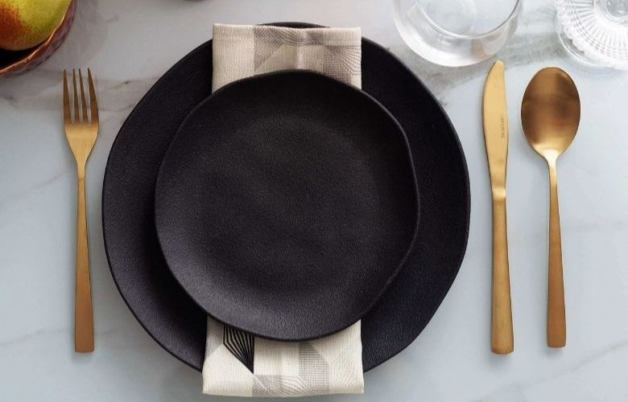

Bem-vindo as minhas receitas, seu destino para receitas deliciosas e acessíveis! Descubra como cozinhar pratos incríveis com receitas detalhadas.
- Uma sobremesa clássica e irresistível, feita com leite condensado, leite e ovos, caramelizada para um toque perfeito de doçura.
- Uma opção reconfortante, com camadas de massa, molho de carne ou vegetais, e muito queijo derretido.
- Uma delícia brasileira, com uma textura única e cremosa, ideal para acompanhar o café.
Nossa missão é inspirar você a criar refeições que encantam. Junte-se à nossa comunidade e transforme sua cozinha!